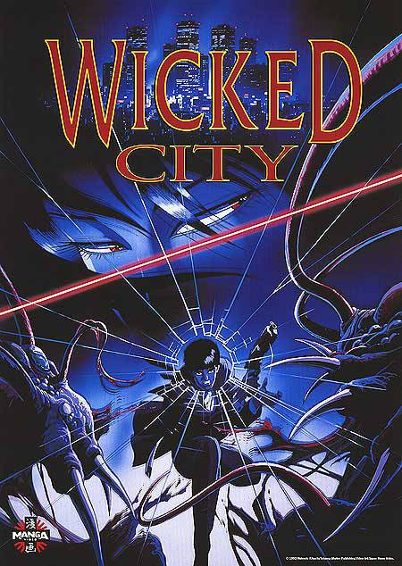
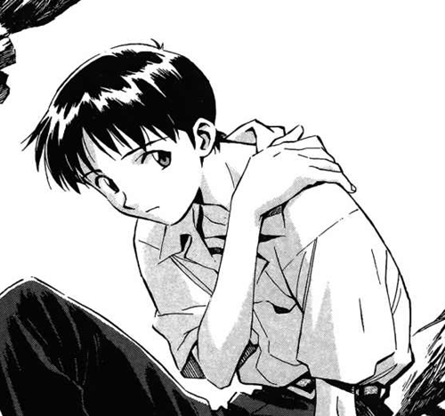
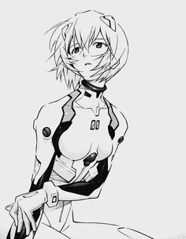

Neon Genesis Evangelion
Damn, where do I start with Evangelion...?
I put a manga section onto this website even though I only really have two titles to put in it: Akira and Evangelion. I seriously believe that if Japan had only made these two comics they'd still be heralded as being the top country in animation and illustration world-wide.
I've been a manga/anime fan ever since seeing the movie version of Akira aged 9 but I actually discovered Evangelion pretty late on (probably only about 2 years
ago) through a book by Susan J. Napier called Anime - from Akira to Howl's Moving Castle.
 It's incredibly rare to find theoretical writing or analysis
on anime in english and Napier is the only western writer I've found who actually looks at these cartoons and thinks "maybe this stuff's deeper than it's given
credit for". Her book is extremely thought provoking and gives intelligent hypothesees and insights into such unlikely places as kids movies and even hentai porn.
Yes seriously, trust me if you're a manga/anime fan Napier's book on the subject is seriously worth checking out.
It's incredibly rare to find theoretical writing or analysis
on anime in english and Napier is the only western writer I've found who actually looks at these cartoons and thinks "maybe this stuff's deeper than it's given
credit for". Her book is extremely thought provoking and gives intelligent hypothesees and insights into such unlikely places as kids movies and even hentai porn.
Yes seriously, trust me if you're a manga/anime fan Napier's book on the subject is seriously worth checking out.
It was through this book that I discorvered a 90s anime tv series called Evangelion which actually blew my mind. Namely because I really didn't expect it to. To be honest, I think I'd probably seen clips of the show before and totally mis-judged it on the basis that it looks...hmm, well...kinda gay.
My experience and love of Japanese animation came from a lot of the stuff that shipped to the west in the 80s, mainly Cyber-punk, techno gore crime trash. Movies like Wicked City or Fist Of The North Star that were really violent or creepy, just stuff that you'd never see over here in cartoons, or ideas that you'd never see here in anything!
The thing that turned me off about Evangelion is that it looks really clean and bright, the charactors look like they could have come straight out of Pokemon. Worst of all it's a mecha! For those of you not cool enough to know; Mecha is a genre of anime that focuses on giant robots with a person driving inside...bit like Power Rangers. Oh god, I'm actually making it sound like the lamest show ever!
It's not the lamest show ever, it's pretty much the best series I've ever watched. It's totally up there with The Wire any day of the week (hmm weird comparison). I'm not going to go too into the series because I actually want to talk about the comic version of the story, which was actually being written and published at the same time as the series was being aired. They where both written by Yoshiyuki Sadamoto and are both broadly speaking the same except there are some key differences in the endings, which I wont go into now, and they both have subtley different tone. Whereas the TV series is quite bleak and the characters are cold, the manga has some lighter and more satisfying moments to it, which personally appealed to me. Although I wouldn't go so far as to say it's warm or anything close to warm.
Hmm, doesn't quite sound like Power Rangers does it? Well no, when reading it you'll quickly realise that Neon Genesis Evangelion is much more than it appears on the surface. I mean, this comic is deep and it doesn't pull it's punches. It's basically about a teenage boy and his inner struggle to accept himself despite his severe loneliness and self hatred...and it's also about fighting aliens with giant robots. Sooo, what's not to like?
I think the most impressive thing about Eva is that it's a story which actually describes the psychology of one character, Shinji Ikari through loads of other characters who all have the same problem, self-isolation, but not only does it do that through charaters it also does it through the environment they're in. Everything in Evangelion has a double meaning and no one says directly what they think. The characters of the story are so well fleshed out because the whole story actually plays out a bit like a soap rather than a sci-fi. There's a sense that things really could go badly wrong in Eva which makes the action scenes hugely tense and nothing ever plays out quite like you expect it to.

There's a clearly a beating heart behind this manga. It was apparently written by Yoshiyuki Sadamoto after going through a serious period of depression. He says himself that it was this time in Sadamoto's life that provided much of the influence and material for Evangelion. You can definitely believe that. Eva's scenes are driven by something much more than simply satisfying the readers want for action or escapism and it's this reason that Evangelion has become one of the most influential anime series of all time.